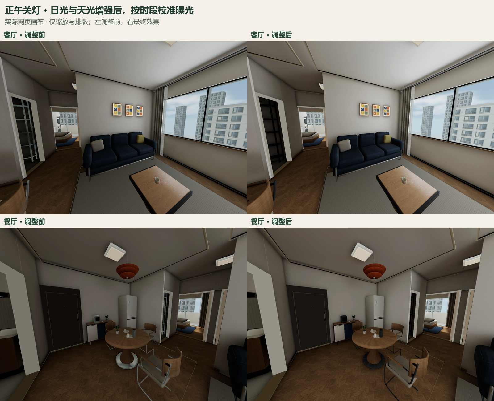
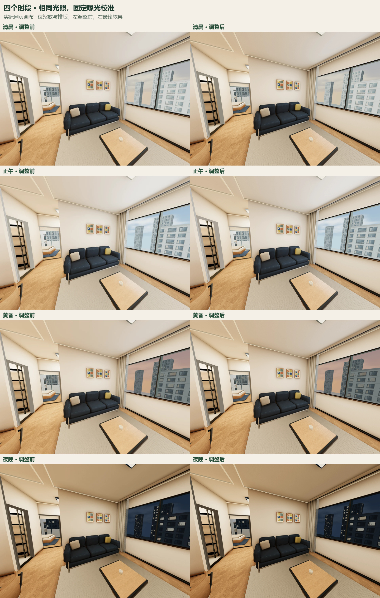
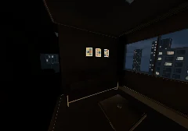
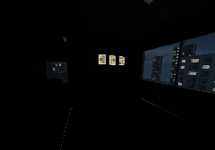

白天天光、固定曝光与关灯瞬态修复
正午日光增强35%、天光增强65%，清晨和黄昏适度提高。日光与天光仍可单独调节；太阳方向、参考时刻和光斑位置保留。曝光按四个时段固定，开关灯、转动视角和跨房间都保持该时段的同一个值。
| 时段 | 日光倍率 | 天光倍率 | 最终室内曝光 |
|---|
| 清晨 | 1.18 | 1.30 | 1.00 |
| 正午 | 1.35 | 1.65 | 0.92 |
| 黄昏 | 1.10 | 1.20 | 1.04 |
| 夜晚 | 1.00 | 1.00 | 0.86 |
画面来自 Chrome 的真实 WebGL1 画布；每张等待静态照明和当前房间反射完成。PC 1280×900，手机390×844为触屏/微信UA模拟。图片未在后期调亮、修补阴影或生成替代画面。默认灯光能量50%，日光/天光控件170%/140%；对比机位、视野与控制值相同。
本轮前后对比
这部分40组比较覆盖正午各房间的开关灯，以及其他时段客餐厅关灯。选择第二种基线可以单独观察曝光校准的作用；它和最终图使用相同的增强光源。

四时段固定曝光 · 开关灯都检查
下方只比较曝光：自然光与灯具能量相同。左图使用原室内曝光，右图使用最终固定值；桌面相同画幅、相同机位，分别为960×675与1280×900画布。
清晨保持柔和自然光；正午压低叠加开灯时的白墙和台面高光；黄昏保留暖色和明暗差；夜晚降低大面积灯光的刺眼感。夜晚关灯仍保持夜景暗度，不用提高曝光把它模拟成白天。

关灯后的单帧高亮
复现到的原因是照明切换后，旧灯光状态的房间反射缓存被短暂重新启用。现在场景状态改变时立即停用旧反射，只启用与当前状态版本一致的缓存。下图为修复前后关灯最初32帧的画布平均亮度；曝光均为当时的0.9504，以隔离修复作用。

修复前 · 第13帧，旧反射短暂启用
修复后 · 第24帧，旧反射保持停用小图为240×168逐帧记录，未做亮度处理。该历史对比采于本轮曝光校准前；最终曝光已重新通过逐帧回归。桌面、手机模拟、缺HDR/depth扩展和Windows WebKit各检查夜晚/正午144帧，共1152帧；检查了转向、跨房间、返回、灯能量、曝光固定与反射缓存版本。
漫游镜头高度
室内模式 → 设置 → 室内视角与灯光 → 镜头高度。范围1.0–1.8米，步进5厘米，默认1.5米；即时升降，换房间和切换模式后返回室内仍沿用本次高度。已有设置只读恢复，新增调整仍不保存。